Enterprise leadership
British Data Awards 2026
Finalist: Data Leader of the Year (Partner).
View details ↗Recognition & contribution
International awards, invited academic service and a wider record of contributions to AI and engineering.
02 / Recognition & contribution
International recognition, invited academic service and contribution to the wider AI community.
Enterprise leadership
Finalist: Data Leader of the Year (Partner).
View details ↗Independent recognition
Manufacturing & Industry, 2022. Recognition for AI work in manufacturing and energy.
View details ↗Academic judgement
Invited expert on a Doctoral Examination (Aptitude Colloquium) committee.
View details ↗Research into impact
Distinguished Visiting Fellow, contributing to research embedding and industry impact.
View details ↗Innovation evaluation
External evaluator and reviewer for Horizon Europe’s NGI Search project, 2023.
View details ↗Sustainability research
One of 25 international awardees selected by Germany’s Federal Ministry of Education and Research in 2021.
View details ↗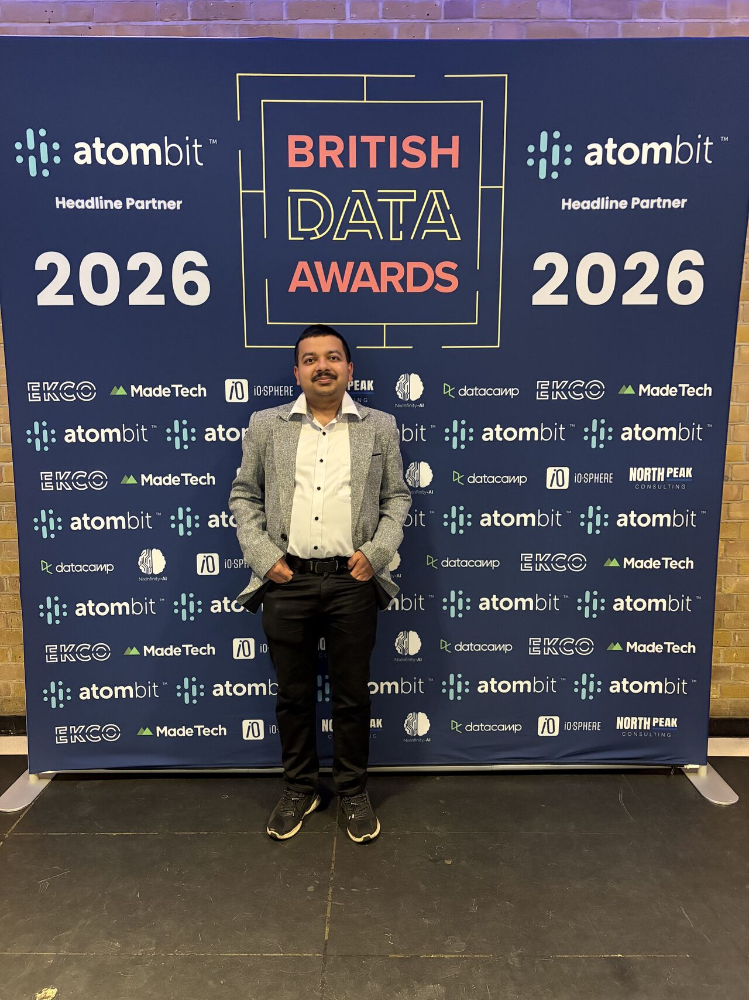
Enlarge image ↗2026
At the British Data Awards 2026, as a finalist for Data Leader of the Year (Partner).
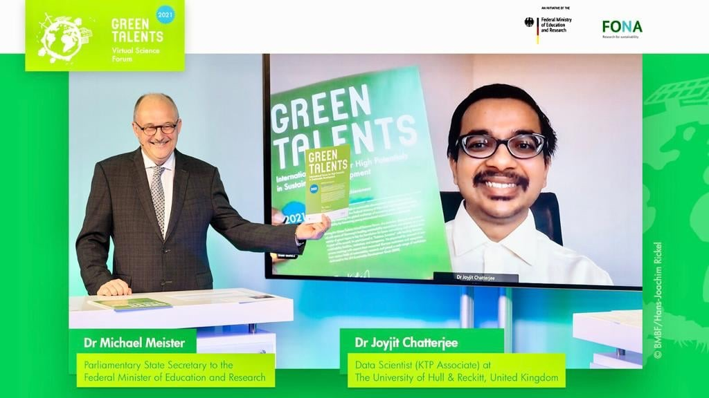
Enlarge image ↗2021
The virtual Green Talents award ceremony with Parliamentary State Secretary Michael Meister. Joyjit appears remotely on screen. Image credit: BMBF / Hans-Joachim Rickel.
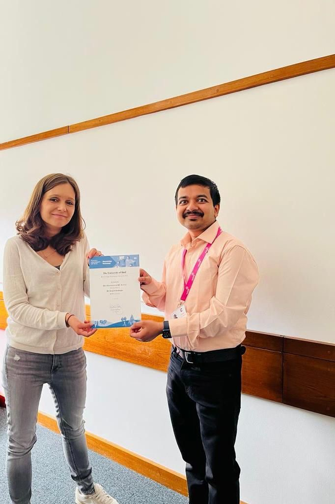
Enlarge image ↗2023
Receiving the University of Hull’s Best International Knowledge Exchange Activity award for KTP activity.
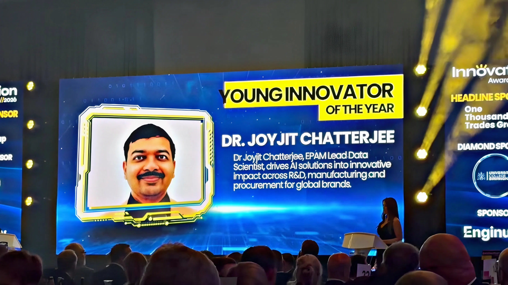
Enlarge image ↗Nov 2026
Named among five finalists for Young Innovator of the Year, representing EPAM Systems.
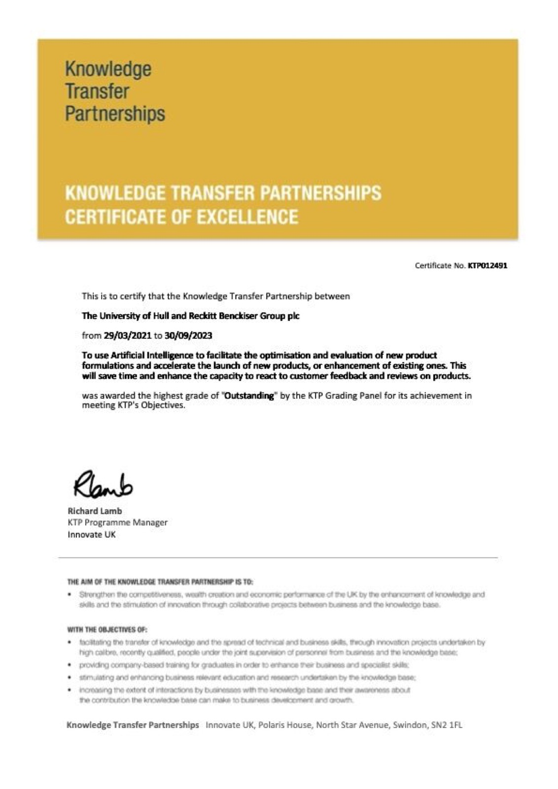
View certificate ↗Reckitt × University of Hull
The Knowledge Transfer Partnership received Innovate UK’s Certificate of Excellence with the highest grade, Outstanding. My work connected AI research with practical R&D and manufacturing challenges at Reckitt.
Project completed in 2023. Certificate shared in February 2024.
View the recognition ↗One of five finalists for Young Innovator of the Year, representing EPAM Systems.
Recognition details →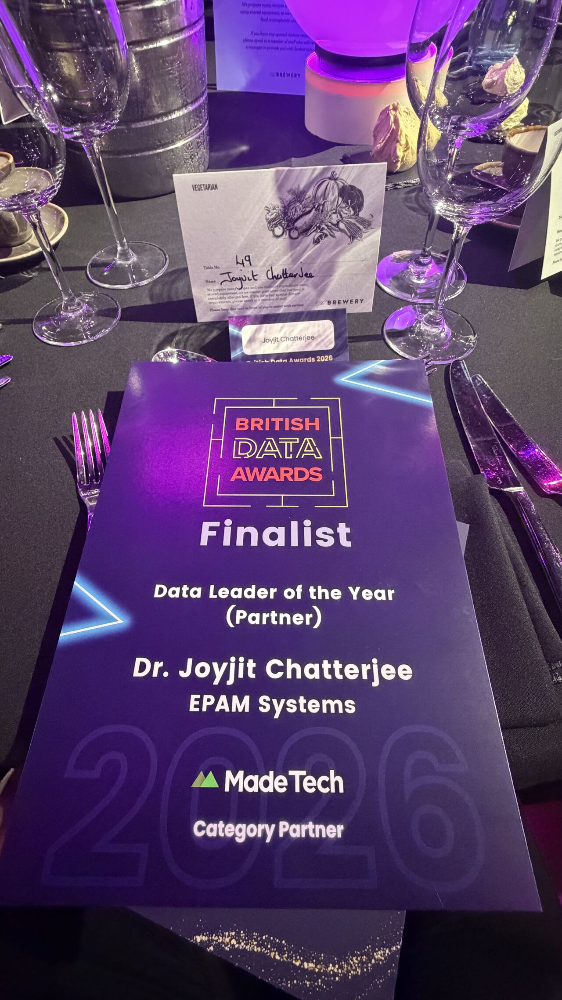
View award ↗Named a finalist in the Data Leader of the Year (Partner) category.
Recognition details →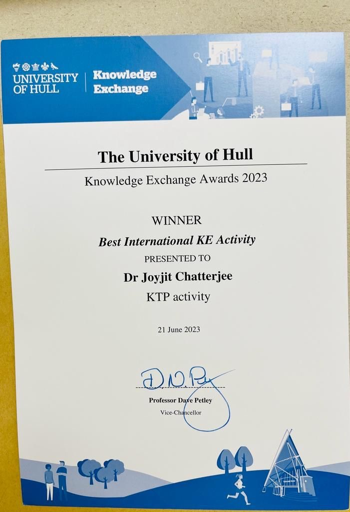
View award ↗University of Hull award for global collaborations and impact in the KTP project
Recognition details →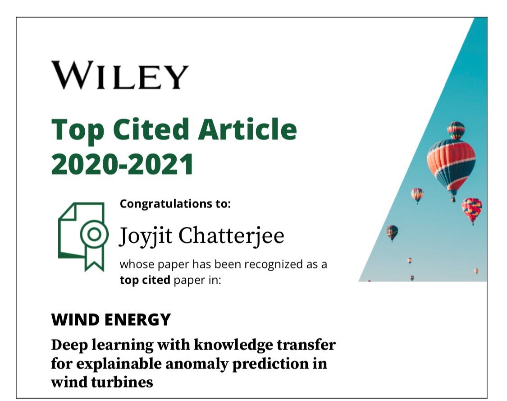
View award ↗Wiley Top-Cited Article recognition for 2020–2021 in the Wind Energy journal.
Recognition details →Endorsed as Global Talent by UK Research and Innovation (UKRI).
Recognition details →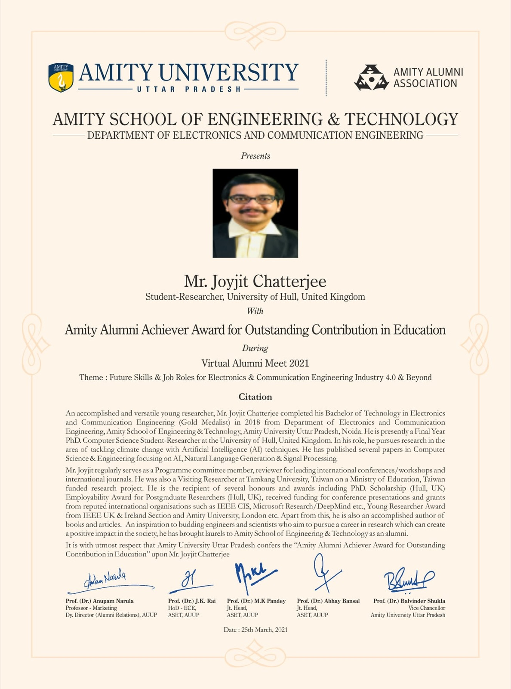
View award ↗Awarded by Amity University for Outstanding Contribution in Education.
Recognition details →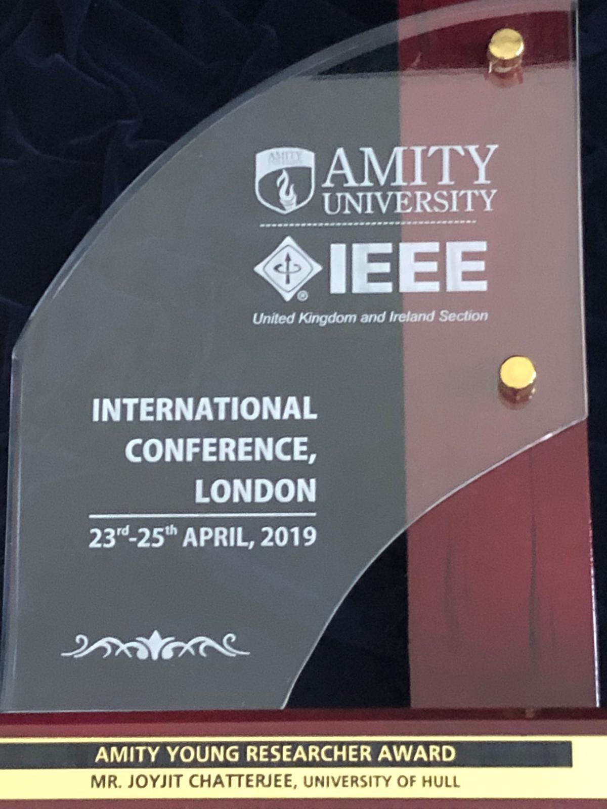
View award ↗Amity Young Researcher Award, recognising early-career research contributions.
Recognition details →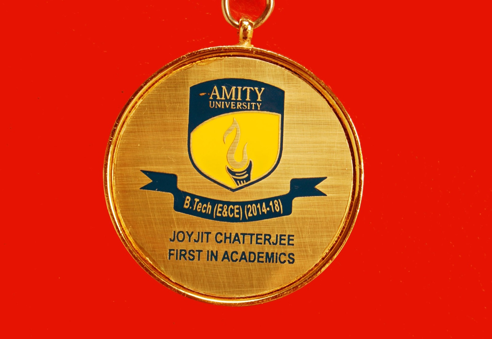
View award ↗Gold medallist and first in the B.Tech Electronics & Communication Engineering programme at Amity University, with 9.68/10 CGPA.
Recognition details →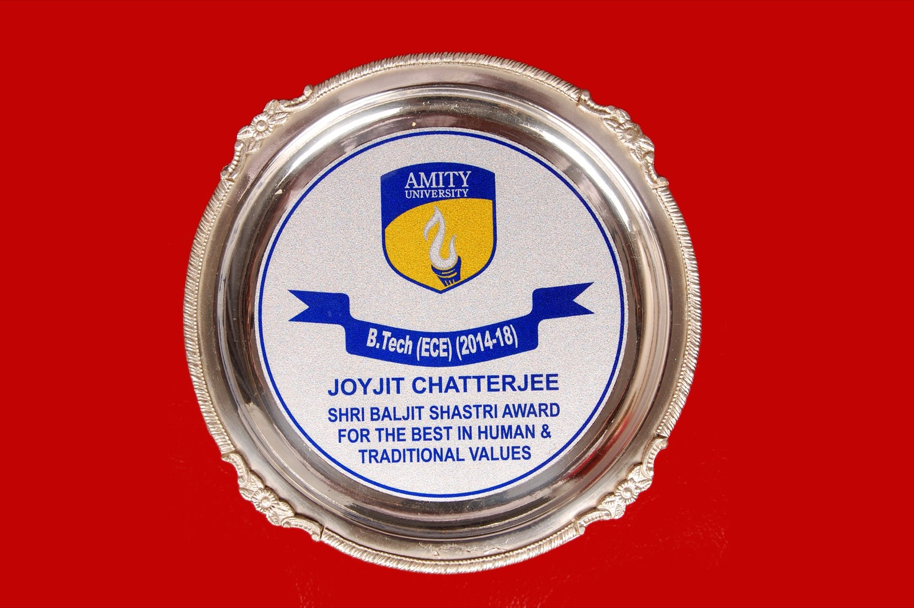
View award ↗Most coveted award of Amity University for Best in Human and Traditional Values
Recognition details →Business, product & leadership development
Cambridge business CPD · Oxford AI Programme · Professional Agile Leadership · AI for Product Management